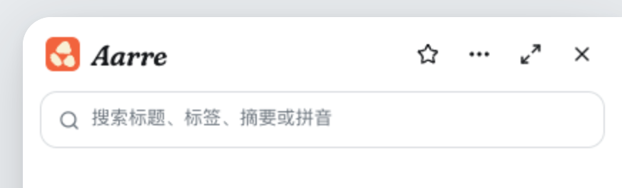
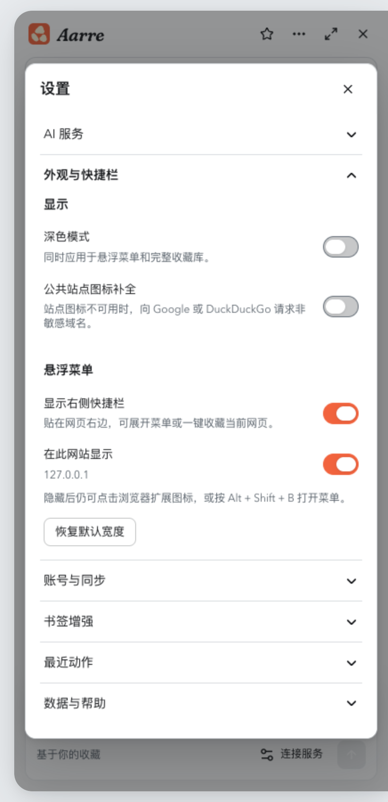

AARRE / WORDMARK & COLOR · 2026.09.14
字标与品牌配色
已采用 A · Fraunces Italic，菜单与网页版同步更新。其余三套保留供回看。
当前对比 · 方案 A
Fraunces Italic
圆润的衬线、略带偏心的笔画，能接住三颗石头的分量。四套中，它的图形感最强，也最贴近当前品牌。
菜单字标 20 px / 图标 24 px

字标与配色已更新 · 0.6.25
暖橙点缀，清晰的深色文字
从图标取出暖橙色，用在开启的开关和选择控件；小字、AI 标签与已收藏状态使用更深的橙色。圆钮统一为白色，主操作按钮继续用黑色。
品牌强调#F2633D
强调文字#B74624
面板#FFFFFF
正文#17191C
夜间模式使用黑白灰。弹窗、菜单与底层页面继续用不同明度区分，颜色不会重新融在一起。
A 方案已应用到正式产品字标。
